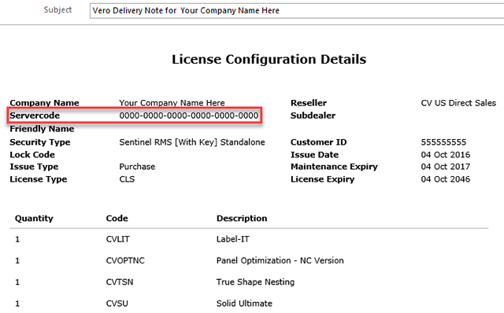
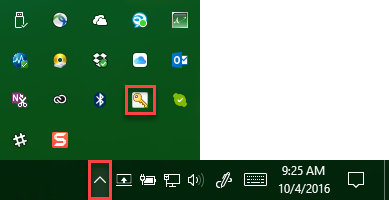
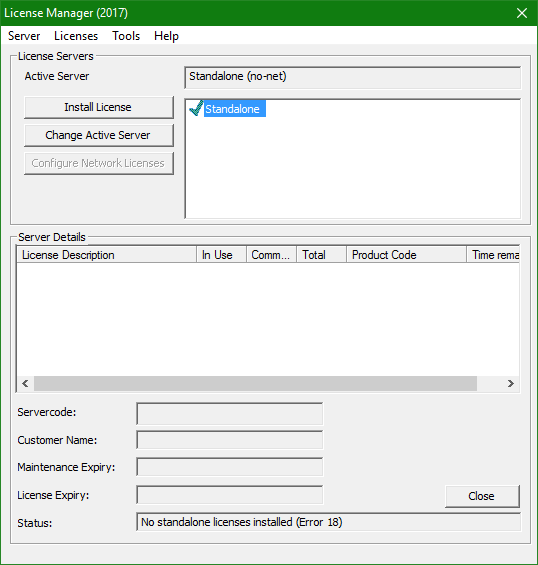
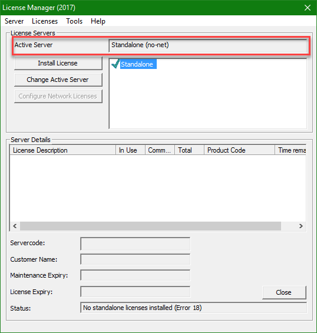
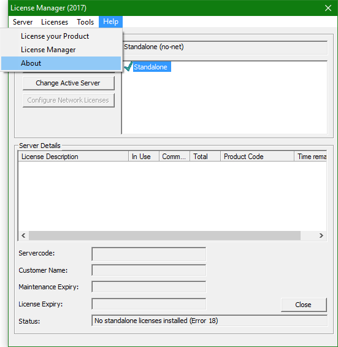
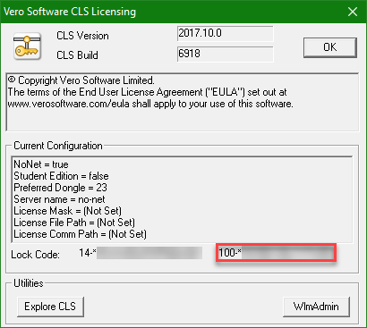
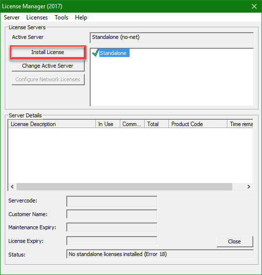
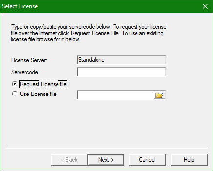

You are receiving this message either because you are to be Licensed standalone and have not installed your License yet. Or you are on a Network License and all Licenses are in use. Please contact your System Administrator if you are on a Network License. Otherwise follow the instructions below for installing a standalone License.
IMPORTANT: See the Cabinet Vision Help file for Network License Installation. If you are running a Network install with standalone Licenses follow the steps below.
You should have received your Servercode via an email from Vero Software Limited orders@verosoftware.com that contains your Servercode (see image below). If you did not receive this email then you will need to contact your Vero Software Representative to have it emailed to you.
You should see the Vero CLS application running in the Windows System Tray:
Double click the Vero CLS icon to start the Vero CLS License Manager.
When first setting up your Standalone License for your Cabinet Vision product you need to make sure the key is in place on your computer and that the Active Server is set to “Standalone (no-net)”.
If it is not set to “Standalone (no-net)” simply click the Change Active Server button to set it.
To make sure your key is properly identified go to Help | About.
You should see a Lock Code that begins with 100- (older CV dongle) or 80- (Green Vero Software Dongle) as indicated below:
The Lock Code is very important to successfully License your Cabinet Vision product and without it you cannot get a License file.
If you are trying to run standalone and you do not see either the 100- or 80- Lock Code then your key is either not plugged in or the driver is not properly installed. If the key is plugged in, then unplug it and plug it back in. If the key is not plugged in, then plug it in now. Once that is complete then you will need to restart the License Manager. To do this simply right click the CLS icon in the Windows System Tray and select Close. You will then be presented with a message box asking you if you want to “…restart CLS?’ click Yes. Once CLS has restarted open CLS back up and you should see your proper Lock Code in Help | About. If you still do not see the proper Lock Code, then unplug the Key and reinstall Cabinet Vision. Once the installation is complete plug the key back in. If you still do not see the proper Lock Code, either post on Nexus Community in the CV 10 forum or conact CV Technical Support.
If you do not have Internet access on your computer then see the instructions for that scenario in the Help file.
A standalone License can be setup for a standalone install where the key is located on your Computer. A standalone License also can be setup for a Network install where standalone keys are located on each workstation rather than the Licenses all being managed from the Server. If the Licenses for a Network Installation are all going to be managed from the Server see the Network License topic in the CV Help file.
Once you have verified the key is properly identified you can now request a License File for your Cabinet Vision product. To get started make sure Standalone is selected then click the Install License button in the License Manager.
After you have clicked the Install License button, the Select License dialog is displayed.
You now need to request a license file over the Internet.
To request a license file over the Internet:
To activate the license
If you type in your email address, your information will be sent to the Vero server and - once you have completed the confirmation dialog - you can download and install the license file automatically.
To confirm the license installation
Click Finish to complete the license installation process. You are now ready to run Cabinet Vision.